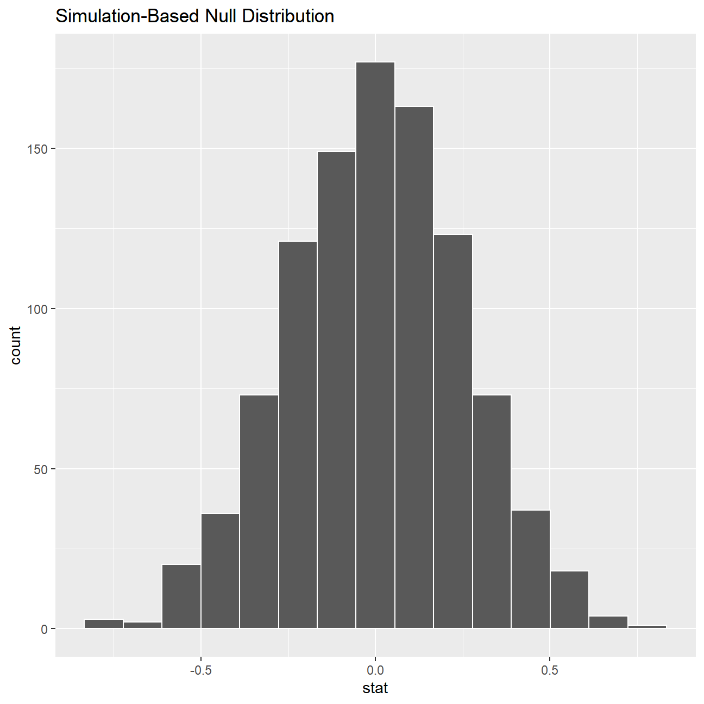

Before anything, write down the null and alternative hypotheses, as well as the resulting test statistic and the associated t-stat or p-value. At the end of the day, what do you conclude?
movies <- read_csv(here::here("data", "movies.csv"))
glimpse(movies)## Rows: 2,961
## Columns: 11
## $ title <chr> "Avatar", "Titanic", "Jurassic World", "The Ave...
## $ genre <chr> "Action", "Drama", "Action", "Action", "Action"...
## $ director <chr> "James Cameron", "James Cameron", "Colin Trevor...
## $ year <dbl> 2009, 1997, 2015, 2012, 2008, 1999, 1977, 2015,...
## $ duration <dbl> 178, 194, 124, 173, 152, 136, 125, 141, 164, 93...
## $ gross <dbl> 7.61e+08, 6.59e+08, 6.52e+08, 6.23e+08, 5.33e+0...
## $ budget <dbl> 2.37e+08, 2.00e+08, 1.50e+08, 2.20e+08, 1.85e+0...
## $ cast_facebook_likes <dbl> 4834, 45223, 8458, 87697, 57802, 37723, 13485, ...
## $ votes <dbl> 886204, 793059, 418214, 995415, 1676169, 534658...
## $ reviews <dbl> 3777, 2843, 1934, 2425, 5312, 3917, 1752, 1752,...
## $ rating <dbl> 7.9, 7.7, 7.0, 8.1, 9.0, 6.5, 8.7, 7.5, 8.5, 7....# In order to reproduce the graph shown above we begin by calculating the confidence intervals for the mean ratings of Burton and Spielberg
#We calculate the 95% CI for Spielberg as follows:
conf_interval_SS <- movies %>%
drop_na() %>%
select(director, rating) %>%
filter(director=="Steven Spielberg") %>%
summarise(mean_rating = mean(rating),
sd_rating = sd(rating),
count = n(),
# get t-critical value with (n-1) degrees of freedom
t_critical = qt(0.975, count-1),
se_rating = sd(rating)/sqrt(count),
margin_of_error = t_critical * se_rating,
rating_low = mean_rating - margin_of_error,
rating_high = mean_rating + margin_of_error)
#We calculate the 95% CI for Burton as follows:
conf_interval_TB <- movies %>%
drop_na() %>%
select(director, rating) %>%
filter(director=="Tim Burton") %>%
summarise(mean_rating = mean(rating),
sd_rating = sd(rating),
count = n(),
# get t-critical value with (n-1) degrees of freedom
t_critical = qt(0.975, count-1),
se_rating = sd(rating)/sqrt(count),
margin_of_error = t_critical * se_rating,
rating_low = mean_rating - margin_of_error,
rating_high = mean_rating + margin_of_error)
#We now merge the two data frames so that we can model them on a single graph
merged_conf <- bind_rows(conf_interval_SS,conf_interval_TB)
M1 <- add_column(merged_conf, .before = 1, Name = c("Tim Burton", "Steven Spielberg"))
#We first create a plot with the relevant data mapping
p1 <- ggplot(M1, aes(x=mean_rating, y=Name, color=Name)) +
#We now add some clarifying features: Titles, axis names and so on
labs(title="Do Spielberg and Burton have the same IMDB ratings?",
subtitle = "95% Confidence Intervals overlap", x="Mean IMDB rating", y="") +
theme(legend.position = "none")
#Having created the base of the graph we apply the geom_errorbar and geom_rect features to add further functionality
p1 + geom_point(size=4) + geom_errorbar(aes(xmax=rating_high, xmin=rating_low), width=0.1, size=2) +
geom_rect(xmin=7.27, xmax=7.335, ymin=-4, ymax=7.5, color="grey", fill="grey", alpha=0.3) +
#We now add data labels specifying the position of each on the graph
geom_text(aes(label=round(mean_rating, digits= 2)),size=5,hjust=0.5, vjust=-1.5) +
geom_text(aes(label=round(rating_high, digits = 2)),hjust=-3.9, vjust=-1.5) +
geom_text(aes(label=round(rating_low, digits = 2)),hjust=4.7, vjust=-1.5)
# Hypothesis Tests for Mean difference
#Since the two confidence intervals overlap in the analysis above we would like to test the hypothesis
# whether or not the mean rating for Steven Spielberg is different from that of Tim Burton.
# In effect we are testing for difference in means.
# H_0 = M_1 - M_2 = 0 (The two means are not significantly different)
# H_1 = M_1 - M_2 ≠0 (There is statistically significant difference between the two means)
hypothesis_test <- movies %>%
select(director, rating) %>%
filter(director %in% c("Tim Burton","Steven Spielberg"))
# We first create a simulation of random outcomes using the bootstrap method
hyp_visualize <- hypothesis_test %>%
specify(rating ~ director) %>%
hypothesise(null = "independence") %>%
generate(reps = 1000, type = "permute") %>%
calculate(stat = "diff in means", order = c("Tim Burton", "Steven Spielberg"))
hyp_visualize %>% visualise() + geom_rect(xmin=0.975, xmax=1, ymin=10, ymax=200, color="red", fill="red", alpha=0.1)
# We can reject the null hypothesis as we can clearly see that the distribution's tails end at approx. 0.8 and -0.8
# We now calculate a P-value to confirm the results of the simulation
hyp_visualize %>%
get_pvalue(obs_stat =(7.57-6.93) , direction = "both") ## # A tibble: 1 x 1
## p_value
## <dbl>
## 1 0# The results again indicate that we can reject the null and that there indeed is statistically significant difference between the means
t.test(rating ~ director, data = hypothesis_test)##
## Welch Two Sample t-test
##
## data: rating by director
## t = 3, df = 31, p-value = 0.01
## alternative hypothesis: true difference in means is not equal to 0
## 95 percent confidence interval:
## 0.16 1.13
## sample estimates:
## mean in group Steven Spielberg mean in group Tim Burton
## 7.57 6.93# Another metric we would like to look at is the t-stat, which in this instance equals 3, which further indicates a rejection of the null
# Having observed these results consistently across our different approaches we reject the null hypothesis and conclude that there indeed is a difference between the two means.